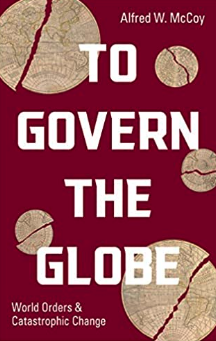

We bombed Iran and, despite a temporary cessation of hostilities, it’s likely that President Donald Trump and his counterpart in Tel Aviv, Prime Minister Benjamin Netanyahu, intend to drag the United States into yet another destabilizing effort in the Middle East, perhaps the most dangerous one yet. As an Iranian American, I feel as if my greatest fears are now being realized.
Like many Iranian Americans, I love this country and the many blessings that it’s provided my family — so much so that I proudly chose to wear the uniform of its Navy. I’ll never forget the immense sense of pride I felt, on July 31st, 1996, when I was sworn into the United States Navy, or the unparalleled sense of responsibility I experienced when I wore my uniform for the first time as an American sailor graduating from boot camp at the Recruit Training Center in Great Lakes, Illinois, in 1997. I then had the honor of being selected as the first Iranian American to serve as a member of the United States Navy Presidential Honor Guard in Washington, D.C. And on every one of those occasions, my loved ones, Iranian immigrants all, proudly stood by my side, beaming with joy as I embarked on what I viewed as a sacred commitment to serve the nation that I love.
We Have to Remember Who We’re Meant to Be
Like many immigrant families, mine came to the United States in search of peace, prosperity, and the possibility of becoming part of the fabric of the country that had given the world the Bill of Rights and the sacred tenet of “equal justice under the law”; the country that had given history George Washington, John F. Kennedy, and Martin Luther King, Jr., among others; the nation that had served as a safe harbor for German refugees like Albert Einstein and Hollywood film director Billy Wilder fleeing Nazi persecution; the great nation that did indeed free the world from the scourge of Hitler and the Third Reich in World War II, and later landed the first men on the surface of the moon. No nation has had so much potential to do good in the world as we do in the United States of America. Our Founding Fathers, imperfect as they might have been, passed on to us the proposition that liberty and human dignity are anything but idle words — that they are, in fact, fundamental human values written in the very hearts of every person. In short, they passed on to us a promise: that all men, every soul, in fact, is endowed by our Creator with life, liberty, and the pursuit of happiness.
Nor did those founders suggest that such sacrosanct, if now seemingly self-evident, values stopped at American shores. They were all too aware that, for centuries, imperial forces had pillaged and wreaked havoc globally on smaller, defenseless countries and on civilizations virtually everywhere. Throughout the centuries, such imperial powers had risen by way of their strength, if not their virtue, and fallen thanks to their global misadventures. And let’s be clear, by any metric you want to mention, the United States is indeed a global imperial force at an all-too-critical crossroads. The question is: Will we allow parasitic and nefarious entities and interests to drain us of our resources, cajole us into breaking yet more international laws, and turn us into a global pariah while betraying the great founding promise of our republic?
With Donald Trump at the helm of state, the answer is likely to be a resounding yes.
Why the Con, Don?
In order to understand the peril in which we find ourselves as a nation, we need look no further than Trump’s recent betrayal of his own director of national intelligence, Tulsi Gabbard. Just three months ago, she testified before Congress that, according to the assessment of the intelligence community, Iran had not made the decision to weaponize its nuclear program.

Buy the Book!
When asked about Gabbard’s assessment recently, Trump quipped, “I don’t care what she said,” as if she had merely been offering an opinion of her own, not testifying about a multi-agency conclusion that Iran was not a nuclear threat. In fact, as a matter of religious edict, Iran’s Supreme Leader, Ayatollah Khamenei, had declared a “fatwa,” ruling that the potential global devastation of nuclear weapons violated the very tenets of the Islamic faith and that his country was forbidden to develop such weaponry.
For my part, more than 25 years ago, as a young sailor on active duty, I found myself recruited by the Defense Intelligence Agency and the Defense HUMINT Service (now the Defense Clandestine Service) specifically because of my Persian-Farsi skills and cultural knowledge. Even then, it was widely reported that our government had a wealth of intelligence capabilities when it came to determining the exact scale, scope, and goals, not to speak of mindset and shoe sizes of the Iranian leadership, especially when it came to their military and nuclear capabilities.
It’s Never Actually Been About Nukes or Regime Change
To be clear, I’m no fan of the repressive Iranian regime and wholeheartedly reject its fundamentalist ideology. At the same time, since my country’s leaders and its intelligence community have regularly reaffirmed that Iran is not a nuclear threat, why would Donald Trump, as well as Republican Senators like Lindsey Graham and Ted Cruz, so casually betray that community and the trust of the American people?
Why would the Trump administration allow itself to appear to be so schizophrenic by moving the goalposts on what has often seemed like a daily basis? The answer: such head fakes and confusion are part of their strategy. Chaos is the point, a crucial aspect of the psychological tactics deployed against the American public to distract us from their end game. My guess is that, not unlike Robert F. Kennedy Jr.’s brain worm, Donald Trump and many of the corporate oligarchs who support him suffer from a parasitic infection — a murderous devotion to Israeli Prime Minister (and International Criminal Court-charged war criminal) Benjamin Netanyahu’s master plan for the Middle East. He, of course, seeks to destabilize that entire region and expand the borders of Israel into countries like Lebanon, Syria, and even possibly the Iranian peripheries. That scheme, called “The Greater Israel Plan,” has been the decades-long aim of radical right-wing elements in the Israeli government.
The modern iteration of that strategy was commissioned by Netanyahu himself. As Jonathan Granoff asks at The Hill:
“Why does [Israeli Prime Minister Netanyahu’s Likud Party] make no credible effort at building a better future for Palestinian people, knowing it serves only to align their interests more closely with Hamas? And why amid all the chaos strike Iran and aggravate the risk of wider war? Where does Israel’s policy of violent coercion rather than cooperation and an ever-widening reliance on military force come from?”
And he answers those questions this way: “It actually has an identifiable source. In 1996, Netanyahu, then Likud party leader, commissioned the policy document ’A Clean Break, A New Strategy for Securing the Realm,’ whose lead drafters were neoconservatives Richard Perle and Douglas Feith, co-architects of the disastrous U.S. invasion and occupation of Iraq.”
The desire to implement just that end-game scenario by hardline members of the Israeli government is the only reasonable way to explain the otherwise confounding actions of both the Trump and Netanyahu governments. A rational person could argue that the hundreds of millions of dollars poured into the Trump campaign in 2024 by pro-Israel billionaires like Miriam Adelson were a mere pittance when compared with the possibility of stealing so much in the way of land and resources in the Middle East. You could also be forgiven for imagining Benjamin Netanyahu, seduced by the wicked wiles of that infamous crew, considering the constricted borders of Israel and thinking: Why not? Why shouldn’t I take it?
Of course, I’m hardly the first person to notice the strange, almost cultish loyalty of so many of our elected officials to his dangerous way of thinking. For instance, in his book Solving 9-11: The Deception That Changed The World, investigative journalist Christopher Lee Bollyn wrote: “Today, the United States of America is by all appearances an Israeli-occupied state. The U.S. Congress dutifully authorizes the annual payment of an immense tribute to Israel, some three thousand million dollars a year.”
Bollyn certainly offers a striking explanation for the events now taking place before our eyes, the voluntary death spiral into which we, as a nation, have been thrust at least in part by the radical Netanyahu government and his death-cult devotees led by the current American president.
Blowback: It’s Not Good for Israel Either
In the same way that Donald Trump’s greed-fueled ambitions far outweigh any desire to do right by the United States, Benjamin Netanyahu’s psychopathic schemes in pursuit of his end game have only served to degrade the international reputation of Israel, making it (outside of the United States) essentially a pariah nation. Even within this country, the Trump administration’s kowtowing to the whims of Netanyahu’s regime, from an unprecedented crackdown on free speech (supposedly to quell “anti-semitism”) to defunding major universities, has earned a massive backlash from both the left and the right.
What makes all of this so tragic is that the state of Israel, through its citizenry, has the capacity to do so much good in this world of ours. My Jewish friends all have a keen sense of justice and a deep sense of compassion towards the plight of the oppressed, values that have been handed down to them, particularly from Holocaust survivors who witnessed the abject evil wrought upon humanity by men with messiah complexes who were without honor or virtue. And that’s exactly why Israelis should, in the end, reject the likes of Benjamin Netanyahu, so that their country can indeed once again become a cherished safe haven for the Jewish people living alongside the future nation of Palestine.
In that regard, one could easily make the case that the greatest threat to the nation of Israel is Benjamin Netanyahu. In his years of public life, due to his unrepentant acts of horror and violence, especially in his latest tenure as prime minister, even American support for Israel has cratered. And the global decline is starker yet, with European nations like Ireland, Luxembourg, and Spain now considering massive embargoes of the Israeli state.
Freedom Is Not Free, Can America Survive?
In 1997, when I was stationed in Washington D.C., my friend Jeff (Smitty) Smith’s little brother came to visit him from Missouri. Smitty and I took him around D.C. and finally came to the then-newly-built Korean War Memorial. If you’ve been there, then you know that the stark and hallowed message of that memorial is: “Freedom Is Not Free,” words chiseled in stone. On seeing this, Smitty’s brother was taken aback, and asked, “What does that mean?” Then 19 years old, I hadn’t really thought about that, but it hit me instantly. “I think it means,” I told him, “that our American soldiers are willing to pay the ultimate price for our freedom.”
I thought of that day again as I was writing this, how in the age of Donald Trump we’ve betrayed the sacrifices of all those generations and how far we’ve fallen as a nation. After I reached out to my editor, Tom Engelhardt, with my ideas for this piece, my mom asked me if it was “safe” to write such an article while Trump was president. After all, he and his goon squad, to their everlasting shame, have gone to the ends of the earth to crush free speech, especially any criticism of Israel or the administration’s nefarious deeds writ large. (Just ask Rumeysa Ozturk, a Tufts University student who dared coauthor an op-ed questioning the ethnic cleansing of Palestinians by the Netanyahu regime, only to quickly find herself disappeared off the street by masked agents of the Department of Homeland Security and imprisoned by the American government.)
In truth, that such thoughts even entered my mother’s mind or mine made me first sad and then ticked off. But certain patterns of history seem all too tragically repetitive. When an imperial power is in peril, unless there is a significant course correction, potential tyrants can take control, with the urge to destroy sovereign nations abroad and crush sacred freedoms at home.
In truth, though, it doesn’t have to be that way for us. Yes, we are now governed by wildly lesser men than the great ones of our past. Which is why none of us should cede any ground, when it comes to patriotism or the very idea of national security, to the likes of Donald Trump and Pete Hegseth who mistake violence and jingoism for love of country. Such lesser men have the urge to manipulate the immense levers of power in their own favor while using those same levers to crush the righteous dissent of the American people.
This is no longer a matter of right versus left, but of uniting all people of peace and goodwill to reclaim the promise of our founding, ensuring that the precious future aspirations of all peoples, be they Americans, Israelis, or Iranians, not be crushed within the grip of a death cult of End Times fundamentalists who, like Heath Ledger’s Joker in the Batman film The Dark Knight, would happily engulf human civilization in flames and laugh as the world around them burns.